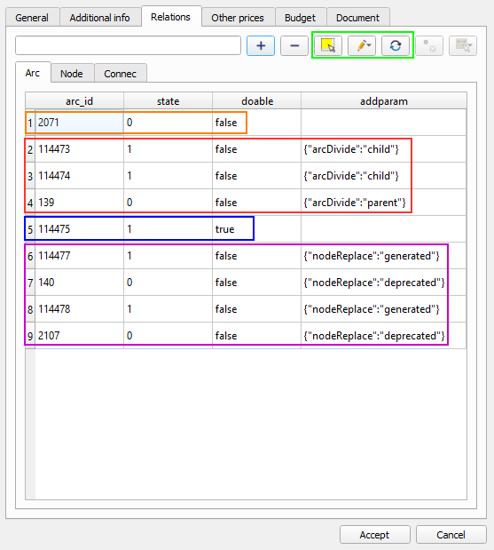
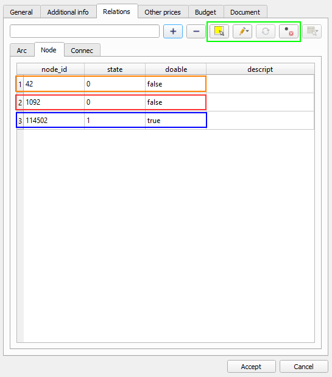
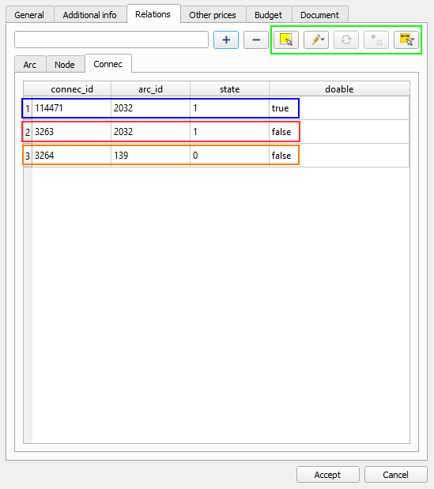
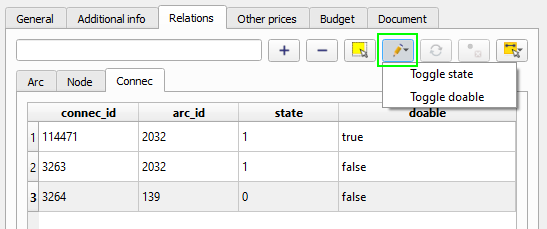
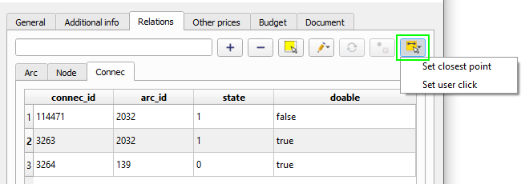
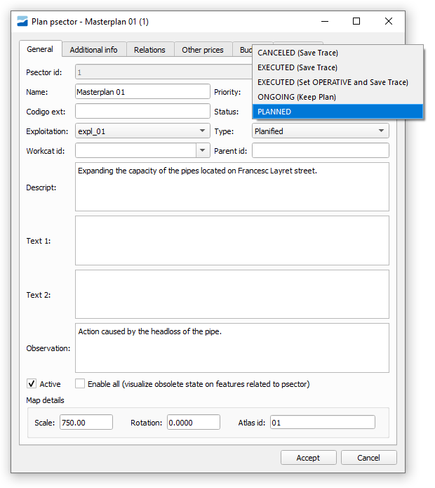

8. Planification sectors
This chapter tries to answer some of the more advanced or complex questions about the use of planning sectors (hereinafter psectors or alternatives).
Before reading this section, it is important to have the knowledge that is transmitted in the sections #4.2.4.1 Planning sectors (psectors)and #5.2.5 Masterplan, where the operation of the psectors is introduced.
It is also important to know the topological rules of the planified elements, explained in the section #3.7 Topological rules, especially the topology of states and the behavior of the links in planning.
It is important to highlight some features, describe processes that have not yet been mentioned or exemplify use cases.
8.1 Manage relationships between network elements and psectors
The complexity of the psector begins in the Relations tab, where the elements that will be part of this alternative are established, either to introduce a new network layout or to remove part of it.
Features for each type of element:
Arc
Related arcs can be entered in the following ways:
-
Add a new section in the Planned state using the usual drawing tools. It will be able to use nodes in service or planified to connect. State=1, Doable=True (blue color in Image 101).
-
Select an existing section using the Select elements button (1st icon in green in Image 101) within the Relations tab (Arc subtab). This will disappear from the map when the alternative is active. State=0, Doable=False (orange color in Image 101).
-
Use the button to Replace arc in service with planned (3rd icon in green in Image 101) when the only thing we want is to change the catalog (material and diameter) of an existing arc but keep exactly the same layout. Two records will enter the Relationships tab: State=1, Doable=True (for the new one) and State=0, Doable=False (for the old one).
-
Split an In-Service arc with a Planned node. This triggers an automatic process where two new sections are generated and the one that was in service is 'unsubscribed'. We will call the new sections 'fictitious' or 'to maintain', since they maintain the previous catalog and layout and are only necessary to maintain the topology. State=1, Doable=False (for the new ones) and State=0, Doable=False (for the old one) (red color in Image 101).
-
Put a Planified node on top of an In Service node. It also triggers an automatic process and 'fictious' sections are generated for all those that intersect with this substituted node. The sections that were in service are 'withdrawn'. It is used to maintain the topology. State=1, Doable=False (for the new ones) and State=0, Doable=False (for the old ones) (purple color in Image 101).
The sections that appear in the Relations tab from an automatic process can be easily identified through the addparam column, which informs if it is an arc division ('parents' or 'children') or replacement process node ('generated' or 'decommissioned').
|  |
|---|
| Image 101: Various examples of records in the Arc tab of a psector's relations. |
Ficticius arcs
These are generated automatically through the explained processes of section division or node replacement. These can be identified since it is established a state_type different than usual for planified elements. In the Giswater sample schema this is FICTICIUS, but these can be configured and change its name or add a new one by:
-
Modify the value_state_type table, changing names or adding records with state=2.
-
In the config_param_system table, modify the value of the variable plan_statetype_vdefault in the key plan_statetype_ficticius.
Although they are generated automatically, once generated they can be modified again to adapt their use to what we really want to do in the psector. Examples:
-
If we want to make a substitution of only a part of the section, we must cut it with a node at the point where we want to end the substitution. Of the two fictitious sections generated, we can change the catalog and the state_type for one of them so that it is identified that it is no longer fictitious (so it can be symbolized in a different way). If we want it to enter the budget of the psector, we must change the doable field to True.
-
If we want to cut an existing section by the half and remove the other part, we will have to do the same as before but this time we will simply delete one of these fictious sections. We can remove it with the plugin tool or with the one of QGIS.
Node
Related nodes can be introduced in the following ways:
-
Add a new node in Planned state using the usual drawing tools. This can only act as the initial or final node for sections in a planned state. State=1, Doable=True (blue color in Image 102).
-
Select an existing node using the Select Elements button (1st icon in green in Image 101) within the Relations tab (Node subtab). This will disappear from the map when the alternative is active. State=0, Doable=False (red color in Image 102).
-
Use the Merge with planned sections button (4th icon in green in Image 102) when we want to make a node in service disappear and join the two sections that connect to it into one. Enter a record in the Relations tab: State=0, Doable=False (orange color in Image 102) and 3 records also appear in the Arc tab: State=1, Doable=True (for the new one) and State=0, Doable=False (for the old).
As seen in section #Arc, when locating Planned nodes on sections, various processes of section division will take place with the commented results.
|  |
|---|
| Image 102: Several examples of records in the Node tab of the relations of a psector. |
Connec, Gully and Links
Related connecs or gullys (hereafter connections) can be introduced in various ways. In this case, special emphasis must also be placed on the management that can be done of the links that unite the connections with the network. It can be managed in the following ways:
-
Add a new connection in Plannified state using the usual drawing tools. State=1, Doable=True (blue color in Image 103). It can be connected to the network through a link in the ways described in the section #3.7.3 Link behavior.
-
Select an existing connection using the Select elements button (1st icon in green in Image 103) within the Relations tab. In this case, it will initially enter the relationships as State=1, Doable=False (red color in Image 103). Next, the link can be modified by changing the arc_id (5th icon in green in Image 103). If you want to remove it from this alternative, you must change State=0 (orange color in Image 103).
-
With the substitution of any section that has connections using the methods described in sections #Arc and #node. All the affected connections will enter relations with State=1, Doable=False. It can be modified later if you want to unsubscribe or change the link.
|  |
|---|
| Image 103: Various examples of records in the Connect tab of a psector's relations. |
Tool to change state and doable
As mentioned in the previous sections, the most important fields in the relationship tables with psector are State and Doable. These can be modified depending on the needs of the user. For example, in the case of connections, it may be common to have to go from State=1 to State=0 when you want to drop an existing connection.
In the Relations tab of the form there is a specific button (Image 104) to be able to make changes in these columns in an easy and multiple way.
On the elements selected in the table, you can click the button and choose if you want to change the state or the doable. In either case, what the program will do is change the value from 1 to 0 or vice versa and from true to false or vice versa.
|  |
|---|
| Image 104: Button to change the State or Doable of the elements in psector. |
Advanced use of links in planified state
There are several ways to manage connections and their links when they are in a planified state.
For each connection with State=1 in the psector, a new link will be created in the database. There are two possible scenarios:
- Connection in Plannified state - It will have 1 link in Plannified state.
- Connection in In Service state - It will have 2 links, 1 in In Service state (which will be displayed without the psector), 1 in the Planified state (which will be displayed with the psector).
This second case serves to change the way of connection using the psector. To do it you have to:
- Add the desired connections to the psector Relations using the methods explained in #Connec, Gully and Links
-
Change the geometry of the link or its arc_id. It can be done in several ways:
a. Manually edit the link with the usual QGIS tools. In case the connection point is in a different section, the arc_id will be changed automatically.
b. Use the Set arc_id tool from the connections tab of the psector. On the selected rows you can establish which section you want to connect to. The connection point can be established as the closest place of the selected section (Set closest point) or the exact place where the section has been clicked (Set user click).
|  |
|---|
| Image 105: Button to establish a new arc_id in the connections in psector. |
8.2 Executing a psector
One of the fields to take into account of the psector is its Status, since depending on the value that is established, certain changes can be executed automatically.
When executing or canceling psectors, its related features will be moved to traceability tables where consulting data will be clear and easy. Psector manager will still keep the alphanumerical basic data and the poligonal geometry around the existing features, but there will be no relations with inventory features.
Traceability tables are:
- audit_psector_arc_traceability
- audit_psector_node_traceability
- audit_psector_connec_traceability
- audit_psector_gully_traceability
These tables will contain all the information stored on plan_psector_x_* tables plus the executed action (EXECUTE or CANCEL) plus all the information on inventroy table (arc, node, connec, gully).
There are 5 different psector states, with its related actions:
- PLANNED - No action
- ON GOING - No action
- EXECUTED (Save Trace) - Related features will be inserted to traceability tables with Execute psector action.
- EXECUTED (Set OPERATIVE and Save Trace) - The elements that were planified will become OPERATIVE state. The elements that were planned to be removed from the psector will become OBSOLETE state. In order to also mantain traceability, related features will be inserted to traceability tables with Execute psector action.
- CANCELED (Save Trace) - Realted features will be inserted to traceability tables with Cancel psector action.
|  |
|---|
| Image 106: Form of a psector where the available states are shown. |
Traceability tables are ready to load onto QGIS project using Giswater's Load Layers button. By default, a useful symbology will be setted to establish a visual difference between planified features, obsolete features and affected features. Of course this simbology can be modified by user to set a more accurate style according to the needs.
 |
|---|
| Image 106: Form of a psector where the available states are shown. |